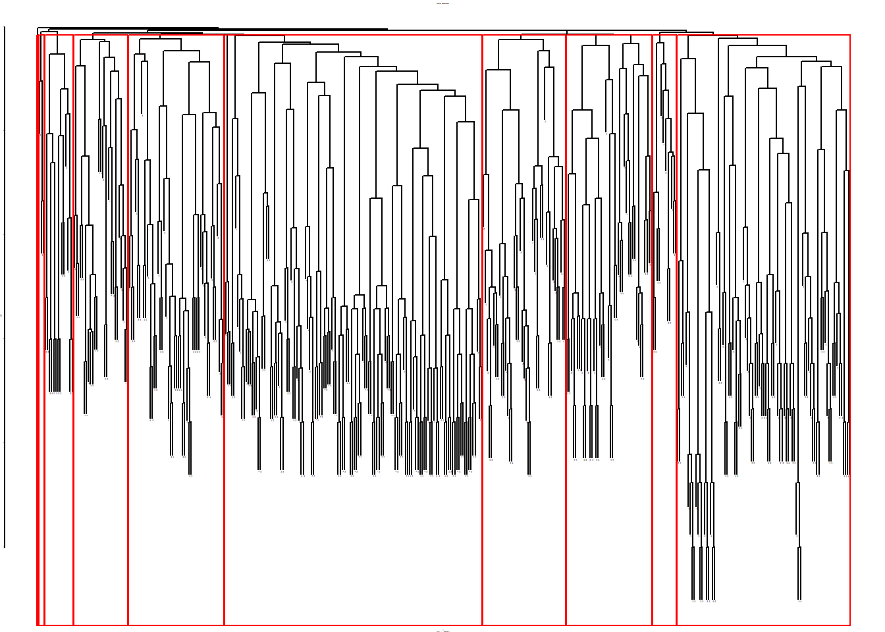

Using Link Clustering to Assign Nodes to Overlapping Communities
We have examined various approaches to community and dense subgraph detection (see here, here, and here).
What they all have in common is that they assign nodes into non-overlapping groups. That is, nodes are either in one group or another but cannot belong to multiple groups at once. While this may make sense in many substantive settings, it might not make sense in others where multiple group memberships are common (e.g., high school).
1 Detecting Overlapping Communities
Methodologically, overlapping community detection methods are less well developed than classical community detection methods. Here, we review a simple and intuitive approach that clusters nodes by computing a similarity metric on the links; instead of using a rank-order metric like edge betweenness (Girvan and Newman 2002) or edge clustering (Radicchi et al. 2004) to delete edges, we compute pairwise similarities between links. We then cluster the links using standard hierarchical clustering methods, which, because nodes are incident to many links, results in a multi-group clustering of the nodes for free. This approach is called link clustering (Ahn et al. 2010).
Let’s see how this works. First, let’s load up the friendship nomination network from Lazega (2001), constrained to be undirected:
The key idea behind link clustering is that similar links should be assigned to the same clusters. How do we compute the similarity between links?
2 Measuring Edge Similarity
According to Ahn et al. (2010), two links \(e_{ik}\) and \(e_{jk}\) are similar if they share a node \(v_k\) and the other two nodes incident to each link (\(v_i, v_j\)) are themselves similar. To measure the similarity between this pair of nodes, we can use any of the off-the-shelf vertex similarity measures we have seen in action (see the lecture notes on local similarity metrics), such as Jaccard, cosine, or Dice. Ahn et al. (2010) use the Jaccard, so that is what we will use.
The first step is thus to build a link-by-link similarity matrix based on this idea. The following function loops through each pair of links in the graph and computes the similarity between two links featuring a common node \(v_k\) based on the Jaccard vertex similarity of the two other nodes:
Code
edge.sim <- function(h) {
E <- ecount(h) # number of edges
V <- vcount(h) # number of nodes
if (is.null(V(h)$name) == TRUE) {
V(h)$name <- as.character(seq_len(V))
} # checking if graph has node names
edgemat <- ends(h, E(h)) # edge list
E.sim <- diag(1, E, E) # initializing link similarity matrix to identity matrix
nlist <- lapply(V(h)$name, function(x) {
c(as.vector(names(neighbors(h, x))), x)
}) # neighbors list for each node
names(nlist) <- V(h)$name # naming neighbors list using graph node names
for (j in 2:E) {
for (i in 1:(j - 1)) { # looping through upper triangle only
ei <- edgemat[i, ] # nodes incident to first edge
ej <- edgemat[j, ] # nodes incident to second edge
if (length(intersect(ei, ej)) != 0) { # do only if pair of edges share a node
v <- setdiff(union(ei, ej), intersect(ei, ej)) # extracting nodes attached to shared node
n1 <- nlist[[v[1]]] # neighbors of first node
n2 <- nlist[[v[2]]] # neighbors of second node
E.sim[j, i] <- length(intersect(n1, n2)) / length(union(n1, n2)) # Jaccard similarity
E.sim[i, j] <- E.sim[j, i] # symmetric score
}
}
}
return(E.sim)
}The function takes the graph as input and returns an inter-link similarity matrix—of dimensions \(E \times E\) where \(E\) is the number of edges in the graph—as output.
It works like this:
- In line 5, we extract the end nodes incident to each edge in the graph using the
igraphfunctionends(which returns an \(E \times 2\) matrix, the nodes at the end of the edges in one column and the nodes at the other end of the edges in the other column). - In line 6, we initialize the \(E \times E\) matrix of edge similarities to the identity matrix (all edges are maximally similar to themselves and have an initial similarity of zero with other edges).
- Lines 7 and 8 create a
listobject callednlistusing thelapplyshortcut, containing the neighbors of each node in the graph as elements (including the ego node itself, the so-called inclusive neighborhood). - Then lines 9-21 enter a double
forloop that cycles through each pair of edges, determines whether they have a node in common (line 13) and calculates the Jaccard similarity between the neighborhoods of the other two nodes using the info stored in thenlistobject (lines 15-16), and fills that info into the edge similarity matrix (lines 17-18).
Here’s the function in action in the Pulp Fiction network:
[,1] [,2] [,3] [,4] [,5] [,6] [,7] [,8] [,9] [,10]
[1,] 1.000 0.360 0.280 0.000 0.000 0.000 0.267 0.000 0.263 0.000
[2,] 0.360 1.000 0.538 0.077 0.000 0.000 0.192 0.200 0.000 0.000
[3,] 0.280 0.538 1.000 0.067 0.000 0.000 0.000 0.300 0.407 0.000
[4,] 0.000 0.077 0.067 1.000 0.038 0.000 0.000 0.053 0.000 0.000
[5,] 0.000 0.000 0.000 0.038 1.000 0.091 0.000 0.000 0.000 0.000
[6,] 0.000 0.000 0.000 0.000 0.091 1.000 0.000 0.000 0.000 0.000
[7,] 0.267 0.192 0.000 0.000 0.000 0.000 1.000 0.000 0.000 0.263
[8,] 0.000 0.200 0.300 0.053 0.000 0.000 0.000 1.000 0.000 0.000
[9,] 0.263 0.000 0.407 0.000 0.000 0.000 0.000 0.000 1.000 0.267
[10,] 0.000 0.000 0.000 0.000 0.000 0.000 0.263 0.000 0.267 1.000We can then transform the link similarities into distances, and cluster them:
The resulting dendrogram looks like this:
Code

The leaves of the dendrogram (bottom-most objects) represent each link in the graph (\(E =\) 398 in this case), and the clusters are “link communities” (Ahn et al. 2010).
3 Clustering Nodes
As we noted, because the links are the ones that get clustered, nodes incident to each link can belong to more than one cluster (since nodes with degree \(k>1\) are incident to multiple links).
We can then use the dendrogram information to return a list of node assignments to multiple communities. Let’s see the results with ten overlapping communities:
Code
[[1]]
[1] "1" "2" "4" "8" "9" "10" "11" "12" "13" "17" "20" "19" "21" "22" "23"
[16] "24" "25" "26" "27" "29" "37" "28" "31" "33" "35" "40" "41" "49" "54" "62"
[[2]]
[1] "3" "4" "6" "12" "13" "2" "14" "15" "16" "17" "18" "20" "21" "22" "25"
[16] "28" "32" "34" "37" "47"
[[3]]
[1] "3" "7"
[[4]]
[1] "5" "18" "28" "7" "30" "32" "33" "35" "47" "48" "51" "55" "31" "56" "12"
[16] "20" "25" "36" "38" "40" "60" "61"
[[5]]
[1] "17" "25" "26" "4" "13" "18" "23" "24" "27" "28" "29" "30" "31" "20" "34"
[16] "36" "32" "33" "35" "37" "39" "40" "41" "42" "47" "48" "49" "51" "53" "55"
[31] "57" "62" "63"
[[6]]
[1] "10" "12" "17" "26" "29" "1" "24" "34" "11" "20" "21" "27" "37" "38" "39"
[16] "13" "40" "41" "42" "45" "44" "46" "54" "61" "62" "63"
[[7]]
[1] "19" "35" "44" "47" "54" "57" "58" "61"
[[8]]
[1] "13" "21" "24" "26" "40" "41" "46" "49" "51" "52" "53" "54" "55" "4" "11"
[16] "27" "61" "62" "63" "64" "65" "66" "67" "68"
[[9]]
[1] "29" "35" "38" "41" "43" "42" "54" "59" "45" "61" "62" "67"
[[10]]
[1] "2" "13" "50" "61"Because nodes belong to multiple communities, the resulting actor-by-community ties form a two-mode network (see here).
We can reconstruct the bi-adjacency matrix corresponding to this two-mode network from the list of community memberships for each node, like this:
And the matrix of inter-community ties based on shared characters can be obtained via the usual Breiger (1974) projection:
[,1] [,2] [,3] [,4] [,5] [,6] [,7] [,8] [,9] [,10]
[1,] 30 11 0 8 19 17 3 12 5 2
[2,] 11 20 1 7 11 7 1 3 0 2
[3,] 0 1 2 1 0 0 0 0 0 0
[4,] 8 7 1 22 15 5 3 4 3 1
[5,] 19 11 0 15 33 15 3 13 5 1
[6,] 17 7 0 5 15 26 3 13 8 2
[7,] 3 1 0 3 3 3 8 2 3 1
[8,] 12 3 0 4 13 13 2 24 5 2
[9,] 5 0 0 3 5 8 3 5 12 1
[10,] 2 2 0 1 1 2 1 2 1 4And we can visualize the nodes connected to multiple communities as follows: